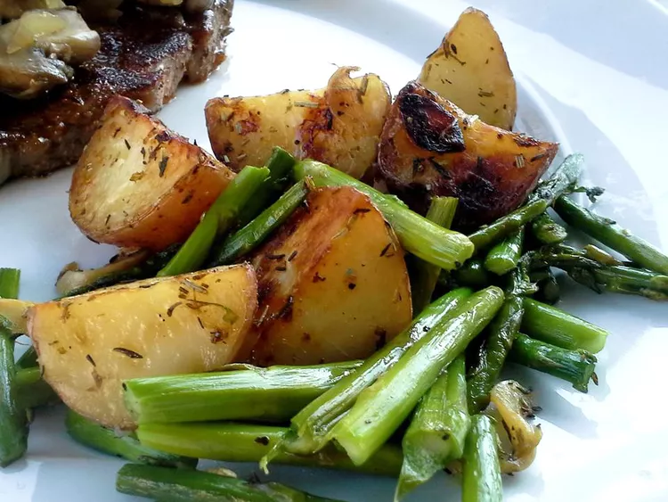

☆VEGETABLES☆
Million Dollar Green Beans

☆Ingredients☆
- 6 slices bacon, coarsely chopped
- ½ cup finely chopped onion
- 3 cloves garlic, minced
- ⅓ cup packed brown sugar
- 3 tablespoons reduced-sodium soy sauce
- 2 (10 ounce) packages frozen whole or cut green beans, thawed and drained
- Crushed red pepper to taste (optional)
☆Instructions☆
1. Gather all ingredients. 2. Cook bacon in a very large skillet over medium heat until crisp, 5 to 8 minutes. Using a slotted spoon or tongs, remove to a paper towel lined plate. Drain bacon grease, reserving 1 tablespoon drippings in the skillet. 3. Add onion and garlic to the skillet. Cook over medium heat until onion is tender, stirring often, about 2 minutes. 4. Add brown sugar and soy sauce to the skillet. Cook and stir over medium-low until mixture begins to thicken, about 1 minute. 5. Add beans to the skillet; cook until beans are tender and sauce is glaze-like, about 5 minutes. 6. Serve beans topped with crispy bacon and crushed red pepper, if desired.
Credit: Green Beans
Caramelized Onion Mashed Potatoes

☆Ingredients☆
- 2 tablespoons unsalted butter
- 2 large onions, thinly sliced
- ¼ cup beef broth
- 2 teaspoons salt
- ½ teaspoon freshly ground black pepper
- 1 tablespoon Worcestershire sauce
- 6 large russet potatoes, peeled and quartered
- ½ cup unsalted butter
- 1 cup whole milk
- Salt and freshly ground black pepper to taste
☆Instructions☆
1. For caramelized onions, melt butter with olive oil in a large skillet over medium-low heat. Add onions, beef broth, salt, and pepper. Cook until onions are a deep golden brown, stirring occasionally, 20 to 25 minutes. Remove from heat and set aside. 2. Bring potatoes to a boil in a pot with enough cold, salted water to cover by an inch; cook until fork tender, about 20 minutes. Drain; return potatoes to the pot, dry potatoes in the pot over medium-high heat for about 30 seconds. 3. Heat butter and milk together in a saucepan over medium heat until butter melts. Coarsely mash potatoes with a potato masher. Add butter mixture and mash until fluffy. Season with salt and pepper. Top mashed potatoes with caramelized onions to serve.
Cheesy Garlic Bread

☆Ingredients☆
- 1 (14 ounce) loaf French bread, cut in half horizontally, then halved again vertically
- 8 tablespoons unsalted butter, melted
- 1 teaspoon garlic powder
- ½ cup grated Parmesan-Romano cheese blend
- 1 cup shredded mozzarella cheese
- ¼ cup chopped chopped parsley
☆Instructions☆
1. Preheat the oven to 375F. Place bread slices face up on a baking sheet; brush melted butter over tops. 2. Divide garlic powder, Parmesan blend, and mozzarella evenly between slices, in that order. 3. Place baking sheet on the middle rack. Broil on low until golden and bubbly, about 9 minutes. Sprinkle with chopped parsley.
Credit: Cheesy Garlic Bread
Oven Roasted Red Potatoes and Asparagus

☆Ingredients☆
- 1-and-½ pounds red potatoes, cut into chunks
- 2 tablespoons extra-virgin olive oil, divided
- 8 cloves garlic, thinly sliced
- 4 teaspoons dried rosemary
- 4 teaspoons dried thyme
- 2 teaspoons kosher salt, divided
- 1 bunch fresh asparagus, trimmed and cut into 1 inch pieces
- Ground black pepper to taste
☆Instructions☆
1. Preheat the oven to 425 degrees F (220 degrees C). 2. Toss potatoes with 1 tablespoon oil, garlic, rosemary, thyme, and 1 teaspoon salt in a large baking dish. Cover with aluminum foil. 3. Bake in the preheated oven for 20 minutes. 4. Mix in asparagus, remaining 1 tablespoon oil, and remaining 1 teaspoon salt. Cover and continue to cook until potatoes are tender, about 15 minutes. 5. Increase oven temperature to 450 degrees F (230 degrees C). Remove foil and cook until potatoes are lightly browned, 5 to 10 more minutes. Season with pepper.
Credit: Asparagus and Potatoes